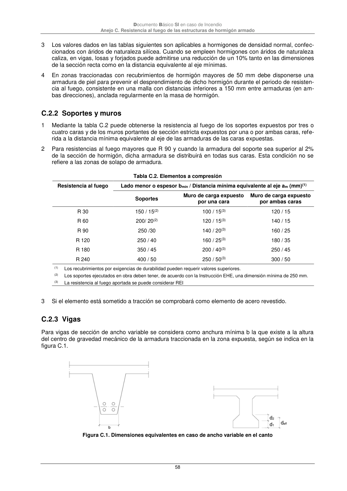

DB-SI · C.2.2 Soportes y muros · C.2.3 Vigas · versión 2025-03-04
SHA256: 0a2e78cd62471d9cc5cfe2efbc6aa39fdbad73c124aea7b039f9de96c141e105 · página física 58 de 92 · métodos de encabezado
solo si están cotejados.
Formatos: Markdown · JSON de bloques · PDF p. 58 · imagen PNG
Documento Básico SI en caso de Incendio Anejo C. Resistencia al fuego de las estructuras de hormigón armado 58 3 Los valores dados en las tablas siguientes son aplicables a hormigones de densidad normal, confec- cionados con áridos de naturaleza silícea. Cuando se empleen hormigones con áridos de naturaleza caliza, en vigas, losas y forjados puede admitirse una reducción de un 10% tanto en las dimensiones de la sección recta como en la distancia equivalente al eje mínimas. 4 En zonas traccionadas con recubrimientos de hormigón mayores de 50 mm debe disponerse una armadura de piel para prevenir el desprendimiento de dicho hormigón durante el periodo de resisten- cia al fuego, consistente en una malla con distancias inferiores a 150 mm entre armaduras (en am- bas direcciones), anclada regularmente en la masa de hormigón. C.2.2 Soportes y muros 1 Mediante la tabla C.2 puede obtenerse la resistencia al fuego de los soportes expuestos por tres o cuatro caras y de los muros portantes de sección estricta expuestos por una o por ambas caras, refe- rida a la distancia mínima equivalente al eje de las armaduras de las caras expuestas. 2 Para resistencias al fuego mayores que R 90 y cuando la armadura del soporte sea superior al 2% de la sección de hormigón, dicha armadura se distribuirá en todas sus caras. Esta condición no se refiere a las zonas de solapo de armadura. Tabla C.2. Elementos a compresión Resistencia al fuego Lado menor o espesor bmín / Distancia mínima equivalente al eje am (mm)(1) Soportes Muro de carga expuesto por una cara Muro de carga expuesto por ambas caras R 30 150 / 15(2) 100 / 15(3) 120 / 15 R 60 200/ 20(2) 120 / 15(3) 140 / 15 R 90 250 /30 140 / 20(3) 160 / 25 R 120 250 / 40 160 / 25(3) 180 / 35 R 180 350 / 45 200 / 40(3) 250 / 45 R 240 400 / 50 250 / 50(3) 300 / 50 (1) Los recubrimientos por exigencias de durabilidad pueden requerir valores superiores. (2) Los soportes ejecutados en obra deben tener, de acuerdo con la Instrucción EHE, una dimensión mínima de 250 mm. (3) La resistencia al fuego aportada se puede considerar REI 3 Si el elemento está sometido a tracción se comprobará como elemento de acero revestido. C.2.3 Vigas Para vigas de sección de ancho variable se considera como anchura mínima b la que existe a la altura del centro de gravedad mecánico de la armadura traccionada en la zona expuesta, según se indica en la figura C.1. Figura C.1. Dimensiones equivalentes en caso de ancho variable en el canto
